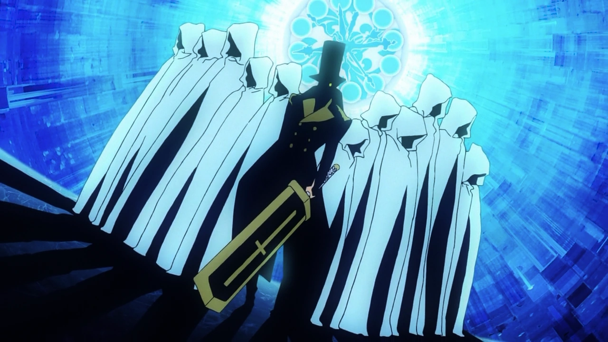

Neir Automata
Introduction
Class : The FALL = Everything = In Vein = Know Were In The Chain & Backups Lost = Eternal WAR
Purpose : Divine Plan = Both Side Are Confused

Don't Fall - It Will Take Time
Practice : The Fall Cycly Thoughout Man History = Backup Data Incomplete = Can't Recover = Occult Out The Box & Cause & Effect
Robot Hostile Take Over = The Two Side = Moral Questions = KING'S Tale All Over Again

A Tale & Which Side Is Which / Robot Factions = Another Group Made By MAN To Help = Know Segrigated & Doesn't Help & Fights Robots Over A Planet In Collapse
Now Question Of Free Will = Now Some Android After Getting Through Out = Later Model - Kicked Out = Underground Creation
Older Model = Underground = Lesson = How You Say it = You Know They Covering It Up They Will Kill = Now Must WE Cover For You Again = Happens - Sometimes On Both Sides
A Game Of Choice = Free Will = Do You Carry Them Or Take A Little & Leave
New Android Model = Ignorant = Now Learns The Truth Of Models = Moral Question On Human Saving & Trusting Older Android Models = Who's Right???